import numpy as np
import matplotlib.pyplot as plt
from scipy import stats
## Uniform(0,1)
print("P(X=0.5) untuk model kontinu = 0")
print("P(0.4 <= X <= 0.6) =", 0.6 - 0.4)P(X=0.5) untuk model kontinu = 0
P(0.4 <= X <= 0.6) = 0.19999999999999996Setelah mempelajari bab ini, mahasiswa diharapkan mampu:
Di bab sebelumnya, kita banyak berurusan dengan besaran yang berupa hitungan: - jumlah cacat, - jumlah pelanggan, - jumlah sukses, - jumlah percobaan.
Sekarang kita beralih ke dunia yang sedikit berbeda: dunia pengukuran.
Kita akan memodelkan besaran seperti: - waktu tunggu, - umur hidup lampu, - tinggi badan, - error pengukuran, - besar permintaan, - lama layanan, - dan waktu antar kedatangan.
Pada banyak situasi seperti ini, lebih masuk akal memodelkan nilai sebagai kontinu. Nilainya tidak sekadar 0, 1, 2, 3, tetapi berada pada rentang yang halus di garis bilangan.
Mari ambil contoh yang sederhana. Misalkan \(X\) adalah random variable kontinu yang uniform pada interval [0, 1]. Kita tahu PDF-nya adalah:
\[ f(x)=1 \quad \text{untuk } 0 \le x \le 1 \]
Sekarang pertanyaannya: - berapa \(P(X=0.5)\)? - berapa \(P(0.4 \le X \le 0.6)\)?
import numpy as np
import matplotlib.pyplot as plt
from scipy import stats
## Uniform(0,1)
print("P(X=0.5) untuk model kontinu = 0")
print("P(0.4 <= X <= 0.6) =", 0.6 - 0.4)P(X=0.5) untuk model kontinu = 0
P(0.4 <= X <= 0.6) = 0.19999999999999996x = np.linspace(-0.2, 1.2, 400)
pdf = np.where((x >= 0) & (x <= 1), 1.0, 0.0)
plt.figure(figsize=(8,4))
plt.plot(x, pdf)
plt.fill_between(x, 0, pdf, where=((x >= 0.4) & (x <= 0.6)), alpha=0.3)
plt.xlabel("x")
plt.ylabel("f(x)")
plt.title("Pada RV kontinu, peluang = luas area, bukan tinggi kurva")
plt.grid(alpha=0.3)
plt.show()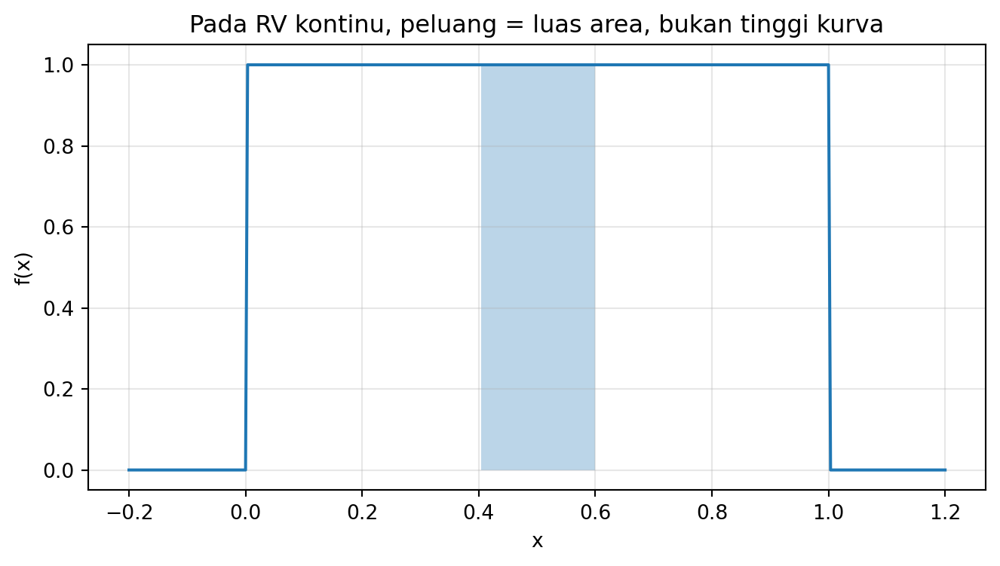
Dari quick win ini kita memperoleh satu pelajaran besar:
Untuk random variable kontinu, peluang tidak datang dari tinggi titik, tetapi dari luas area di bawah kurva PDF.
Kadang kita tidak mulai dari distribusi terkenal seperti Normal atau Exponential. Kita hanya punya perkiraan bentuk dari domain expert atau dari tabel interval. Misalnya: - permintaan produk kemungkinan besar di tengah, menurun di tepi, - usia layanan komponen diperkirakan lebih padat pada interval tertentu, - waktu tempuh berada dalam rentang tertentu dengan perubahan kerapatan yang kasar.
Kita dapat membentuk PDF kustom dari titik-titik \((x_i, f_i)\), lalu menggunakan interpolasi linier atau pendekatan trapezoid. Selama luas totalnya dinormalisasi menjadi 1, fungsi itu dapat dipakai sebagai PDF.
## Titik-titik pembentuk "density" mentah
x_pts = np.array([0, 2, 4, 6, 8, 10], dtype=float)
y_raw = np.array([0.0, 0.1, 0.25, 0.2, 0.08, 0.0], dtype=float)
## Normalisasi agar integral = 1
area_raw = np.trapezoid(y_raw, x_pts)
y = y_raw / area_raw
x_grid = np.linspace(0, 10, 500)
y_grid = np.interp(x_grid, x_pts, y)plt.figure(figsize=(8,4))
plt.plot(x_grid, y_grid, label="PDF kustom (interpolasi linier)")
plt.scatter(x_pts, y, color='red')
plt.xlabel("x")
plt.ylabel("f(x)")
plt.title("PDF kontinu kustom dari tabel selang")
plt.legend()
plt.grid(alpha=0.3)
plt.show()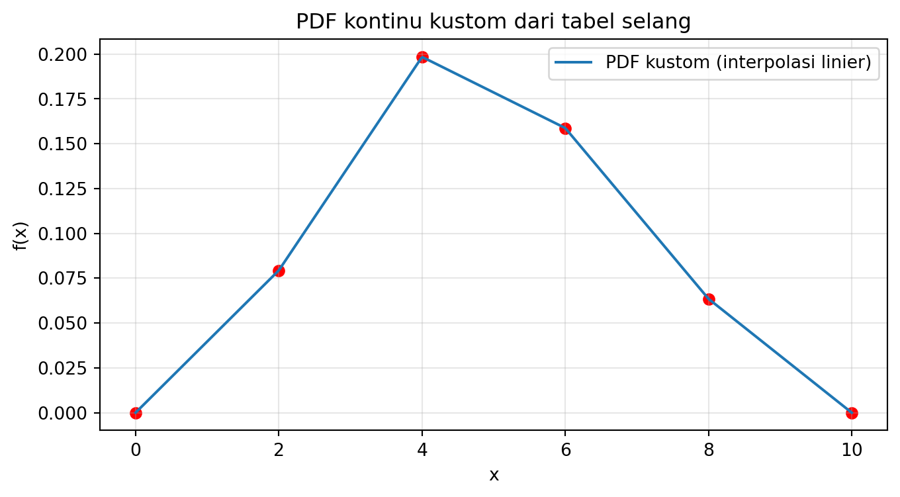
## Peluang interval [3, 7]
mask = (x_grid >= 3) & (x_grid <= 7)
prob_3_7 = np.trapezoid(y_grid[mask], x_grid[mask])
print("P(3 <= X <= 7) ~", prob_3_7)
## Mean numerik
mean_num = np.trapezoid(x_grid * y_grid, x_grid)
var_num = np.trapezoid((x_grid - mean_num)**2 * y_grid, x_grid)
print("Mean ~", mean_num)
print("Variance ~", var_num)P(3 <= X <= 7) ~ 0.659204179902892
Mean ~ 4.825378851610921
Variance ~ 3.92183354068992Distribusi kontinu kustom penting ketika: - data atau pengetahuan domain belum cukup untuk memilih distribusi tertutup tertentu, - kita tetap ingin menghitung peluang, mean, variance, dan quantile, - pendekatan numerik lebih realistis daripada memaksakan model yang belum tentu cocok.
Distribusi uniform kontinu cocok ketika nilai dianggap tersebar merata pada sebuah interval. Misalnya: - waktu kedatangan acak di antara dua titik waktu, - lokasi acak pada segmen garis, - nilai acak yang dipilih secara merata dari suatu rentang.
Jika: \[ X \sim \mathrm{Uniform}(a,b) \] maka PDF-nya:
\[ f(x)=\frac{1}{b-a}, \qquad a \le x \le b \]
dan nol di luar interval tersebut.
a, b = 2, 8
x = np.linspace(0, 10, 400)
pdf = np.where((x >= a) & (x <= b), 1/(b-a), 0.0)
plt.figure(figsize=(8,4))
plt.plot(x, pdf)
plt.fill_between(x, 0, pdf, where=((x >= 3) & (x <= 5)), alpha=0.3)
plt.xlabel("x")
plt.ylabel("f(x)")
plt.title("PDF Uniform(2,8)")
plt.grid(alpha=0.3)
plt.show()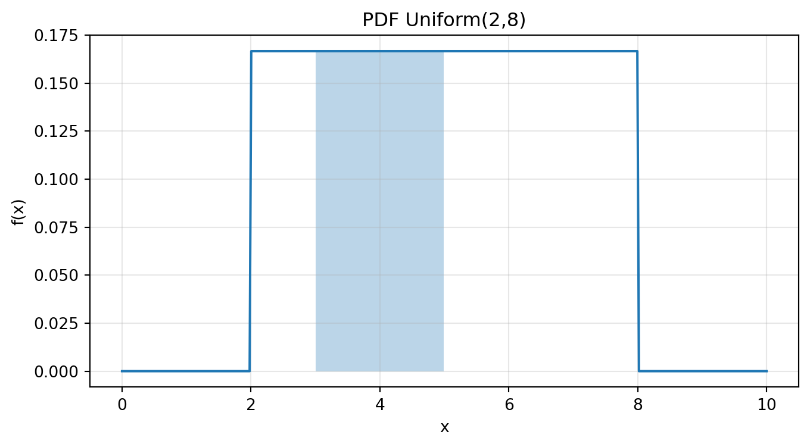
print("P(3 <= X <= 5) =", (5-3)/(8-2))
print("Mean =", (a+b)/2)
print("Variance =", (b-a)**2 / 12)P(3 <= X <= 5) = 0.3333333333333333
Mean = 5.0
Variance = 3.0\[ E[X]=\frac{a+b}{2} \]
\[ \mathrm{Var}(X)=\frac{(b-a)^2}{12} \]
Normal adalah salah satu distribusi paling terkenal karena sering muncul pada: - error pengukuran, - tinggi badan, - berat badan, - hasil agregasi banyak pengaruh kecil, - noise sensor.
Jika: \[ X \sim \mathcal{N}(\mu, \sigma^2) \] maka PDF-nya:
\[ f(x)=\frac{1}{\sigma \sqrt{2\pi}}\exp\left(-\frac{(x-\mu)^2}{2\sigma^2}\right) \]
Parameter: - \(\mu\): pusat distribusi, - \(\sigma\): skala penyebaran.
mu, sigma = 100, 15
x = np.linspace(40, 160, 500)
pdf = stats.norm.pdf(x, loc=mu, scale=sigma)
plt.figure(figsize=(8,4))
plt.plot(x, pdf)
plt.xlabel("x")
plt.ylabel("f(x)")
plt.title("PDF Normal(100, 15^2)")
plt.grid(alpha=0.3)
plt.show()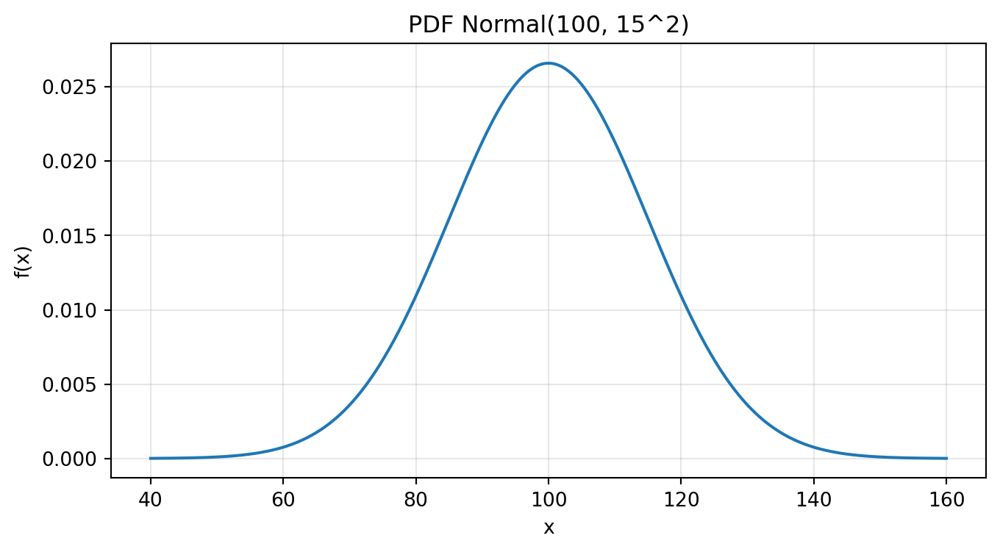
print("P(X < 90) =", stats.norm.cdf(90, loc=mu, scale=sigma))
print("P(90 <= X <= 110) =", stats.norm.cdf(110, loc=mu, scale=sigma) - stats.norm.cdf(90, loc=mu, scale=sigma))P(X < 90) = 0.2524925375469229
P(90 <= X <= 110) = 0.4950149249061542Jika: - \(X \sim \mathrm{Binomial}(n,p)\), - \(n\) besar,
maka Binomial dapat didekati oleh Normal dengan:
\[ \mu = np, \qquad \sigma^2 = np(1-p) \]
Mari lihat contoh.
n, p = 100, 0.4
mu_bin = n*p
sigma_bin = np.sqrt(n*p*(1-p))
x = np.arange(20, 61)
pmf_bin = stats.binom.pmf(x, n=n, p=p)
x_cont = np.linspace(20, 60, 500)
pdf_norm = stats.norm.pdf(x_cont, loc=mu_bin, scale=sigma_bin)
plt.figure(figsize=(8,4))
plt.stem(x, pmf_bin, basefmt=" ", label="Binomial")
plt.plot(x_cont, pdf_norm, 'r', label="Normal approximation")
plt.xlabel("x")
plt.ylabel("Probability / Density")
plt.title("Pendekatan Normal terhadap Binomial")
plt.legend()
plt.grid(alpha=0.3)
plt.show()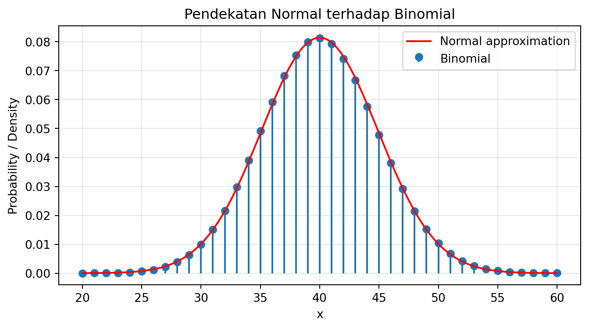
Normal sering dipakai untuk: - menetapkan toleransi manufaktur, - menghitung peluang deviasi pengukuran, - mengevaluasi performa relatif terhadap target.
Distribusi Gamma sangat berguna untuk memodelkan: - waktu tunggu sampai beberapa kejadian terjadi, - lifetime positif dengan bentuk fleksibel, - akumulasi beberapa waktu tunggu eksponensial.
Salah satu parametrisasinya: \[ X \sim \mathrm{Gamma}(\alpha, \theta) \]
dengan: - \(\alpha\) = shape, - \(\theta\) = scale.
PDF-nya:
\[ f(x)=\frac{1}{\Gamma(\alpha)\theta^\alpha}x^{\alpha-1}e^{-x/\theta}, \qquad x>0 \]
alpha, theta = 3, 2
x = np.linspace(0, 30, 500)
pdf = stats.gamma.pdf(x, a=alpha, scale=theta)
plt.figure(figsize=(8,4))
plt.plot(x, pdf)
plt.xlabel("x")
plt.ylabel("f(x)")
plt.title("PDF Gamma(shape=3, scale=2)")
plt.grid(alpha=0.3)
plt.show()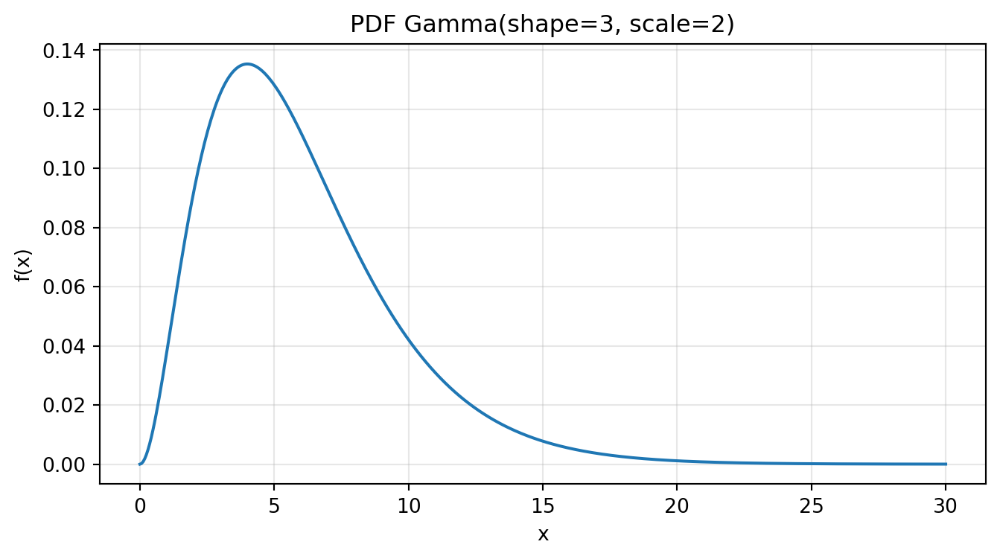
print("Mean =", alpha * theta)
print("Variance =", alpha * theta**2)
print("P(X <= 8) =", stats.gamma.cdf(8, a=alpha, scale=theta))Mean = 6
Variance = 12
P(X <= 8) = 0.7618966944464556\[ E[X]=\alpha\theta \]
\[ \mathrm{Var}(X)=\alpha\theta^2 \]
Gamma cocok untuk waktu positif yang tidak memoryless dan memiliki bentuk yang bisa semakin “membukit” saat shape membesar.
Distribusi Exponential sangat terkenal untuk memodelkan: - waktu antar kedatangan pada Poisson process, - waktu sampai kegagalan pertama pada sistem memoryless, - waktu tunggu hingga kejadian berikutnya.
Jika: \[ X \sim \mathrm{Exponential}(\lambda) \] maka PDF-nya:
\[ f(x)=\lambda e^{-\lambda x}, \qquad x \ge 0 \]
CDF-nya:
\[ F(x)=1-e^{-\lambda x} \]
lam = 0.5
x = np.linspace(0, 15, 500)
pdf = stats.expon.pdf(x, scale=1/lam)
plt.figure(figsize=(8,4))
plt.plot(x, pdf)
plt.xlabel("x")
plt.ylabel("f(x)")
plt.title("PDF Exponential(rate=0.5)")
plt.grid(alpha=0.3)
plt.show()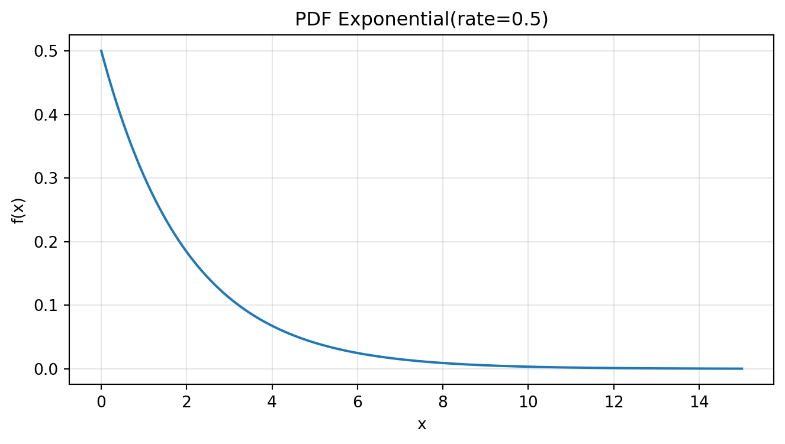
print("Mean =", 1/lam)
print("Variance =", 1/lam**2)
print("P(X <= 3) =", stats.expon.cdf(3, scale=1/lam))
print("P(X > 5) =", 1 - stats.expon.cdf(5, scale=1/lam))Mean = 2.0
Variance = 4.0
P(X <= 3) = 0.7768698398515702
P(X > 5) = 0.08208499862389884\[ P(X>s+t \mid X>s)=P(X>t) \]
Distribusi Exponential adalah versi kontinu dari ide memoryless yang di dunia diskrit dimiliki distribusi Geometric.
Jika jumlah kejadian per interval mengikuti Poisson process dengan rate \(\lambda\), maka waktu antar kedatangan mengikuti Exponential(\(\lambda\)).
Mari simulasikan.
rng = np.random.default_rng(123)
lam = 2.0 ## rata-rata 2 kejadian per satuan waktu
interarrival = rng.exponential(scale=1/lam, size=50000)
x = np.linspace(0, np.percentile(interarrival, 99.5), 400)
pdf = stats.expon.pdf(x, scale=1/lam)
plt.figure(figsize=(8,4))
plt.hist(interarrival, bins=60, density=True, alpha=0.6, label="Simulasi")
plt.plot(x, pdf, label="PDF teoritis")
plt.xlabel("Interarrival time")
plt.ylabel("Density")
plt.title("Interarrival time pada Poisson process ~ Exponential")
plt.legend()
plt.grid(alpha=0.3)
plt.show()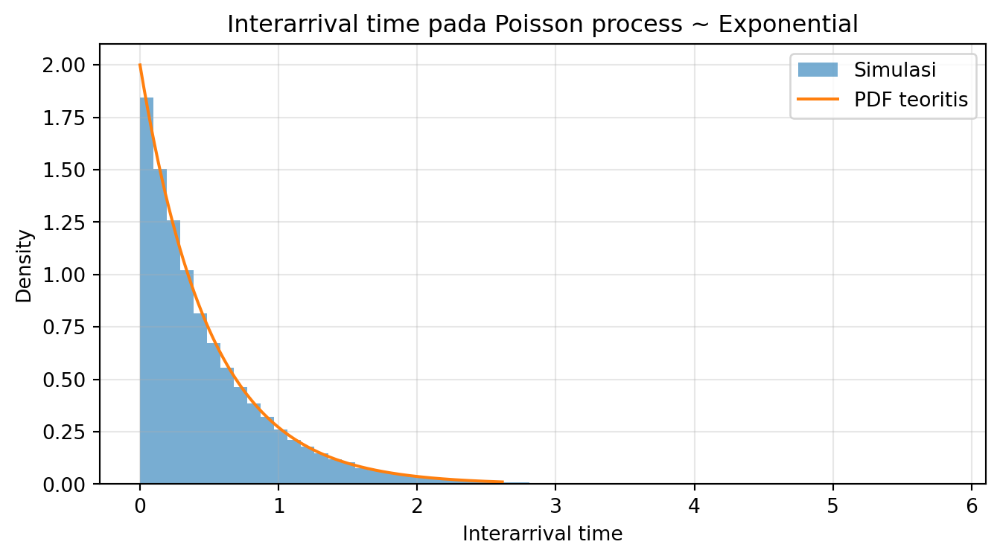
Erlang muncul ketika kita menjumlahkan beberapa waktu tunggu Eksponensial independen dengan rate yang sama. Misalnya: - total waktu layanan yang melewati beberapa tahap berurutan, - waktu sampai \(k\) kejadian dalam Poisson process.
Jika: \[ X = X_1 + X_2 + \cdots + X_k \] dengan tiap \(X_i \sim \text{Exponential}(\lambda)\) independen, maka:
\[ X \sim \text{Erlang}(k,\lambda) \]
Erlang adalah kasus khusus Gamma dengan shape integer.
lam = 0.5
k = 3
x = np.linspace(0, 25, 500)
pdf = stats.gamma.pdf(x, a=k, scale=1/lam)
plt.figure(figsize=(8,4))
plt.plot(x, pdf)
plt.xlabel("x")
plt.ylabel("f(x)")
plt.title("PDF Erlang(k=3, rate=0.5)")
plt.grid(alpha=0.3)
plt.show()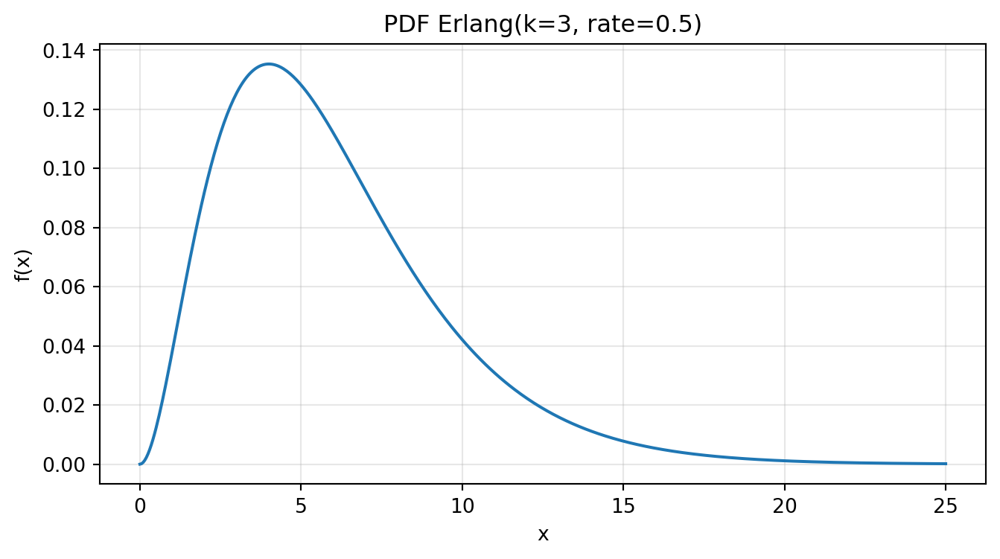
print("Mean =", k/lam)
print("Variance =", k/(lam**2))
print("P(X <= 8) =", stats.gamma.cdf(8, a=k, scale=1/lam))Mean = 6.0
Variance = 12.0
P(X <= 8) = 0.7618966944464556Jika suatu proses terdiri dari 3 tahap memoryless independen, maka total waktunya tidak lagi Exponential, tetapi Erlang-3.
Weibull sangat populer dalam reliability engineering karena dapat memodelkan berbagai pola kegagalan: - kegagalan awal, - kegagalan acak, - kegagalan akibat keausan.
Jika: \[ X \sim \text{Weibull}(k,\lambda) \] dengan: - \(k\) = shape, - \(\lambda\) = scale,
maka PDF-nya adalah:
\[ f(x)=\frac{k}{\lambda}\left(\frac{x}{\lambda}\right)^{k-1}e^{-(x/\lambda)^k}, \qquad x \ge 0 \]
k_shape = 2.0
lam_scale = 10.0
x = np.linspace(0, 30, 500)
pdf = stats.weibull_min.pdf(x, c=k_shape, scale=lam_scale)
plt.figure(figsize=(8,4))
plt.plot(x, pdf)
plt.xlabel("x")
plt.ylabel("f(x)")
plt.title("PDF Weibull(shape=2, scale=10)")
plt.grid(alpha=0.3)
plt.show()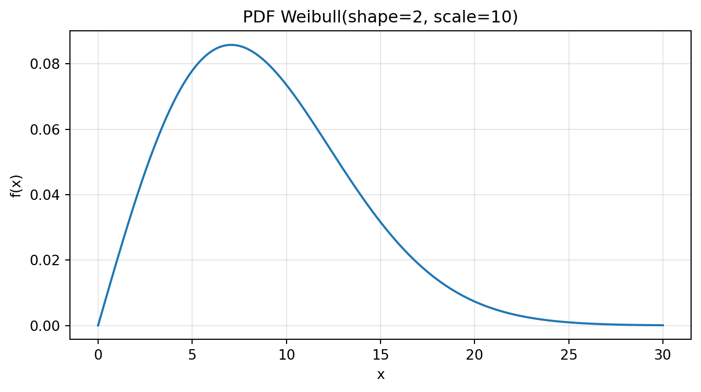
print("P(X <= 8) =", stats.weibull_min.cdf(8, c=k_shape, scale=lam_scale))P(X <= 8) = 0.47270757595695145Weibull lebih fleksibel daripada Exponential. Ia sangat berguna saat laju kegagalan tidak konstan.
Pareto dipakai untuk fenomena heavy-tail, misalnya: - kekayaan, - ukuran file, - kerugian ekstrem, - pendapatan segelintir pihak yang sangat besar.
Jika: \[ X \sim \text{Pareto}(x_m,\alpha) \] maka untuk \(x \ge x_m\):
\[ f(x)=\alpha \frac{x_m^\alpha}{x^{\alpha+1}} \]
alpha = 3.0
xm = 1.0
x = np.linspace(1, 10, 500)
pdf = stats.pareto.pdf(x, b=alpha, scale=xm)
plt.figure(figsize=(8,4))
plt.plot(x, pdf)
plt.xlabel("x")
plt.ylabel("f(x)")
plt.title("PDF Pareto")
plt.grid(alpha=0.3)
plt.show()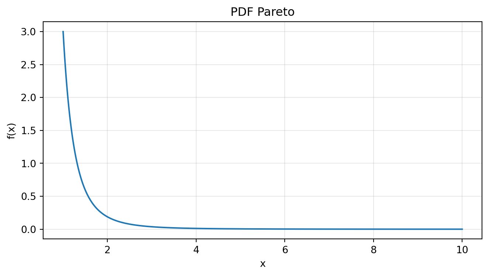
print("P(X > 3) =", 1 - stats.pareto.cdf(3, b=alpha, scale=xm))P(X > 3) = 0.03703703703703698Pareto penting ketika kejadian ekstrem tidak boleh diabaikan. Dalam pengambilan keputusan risiko, tail tebal bisa sangat menentukan.
Chi-Square muncul dalam: - inferensi statistik, - goodness-of-fit, - analisis varians, - penjumlahan kuadrat peubah normal baku.
Jika: \[ Z_1, Z_2, \dots, Z_k \sim \mathcal{N}(0,1) \] independen, maka:
\[ X = Z_1^2 + Z_2^2 + \cdots + Z_k^2 \sim \chi^2(k) \]
Distribusi ini adalah kasus khusus Gamma.
df = 5
x = np.linspace(0, 20, 500)
pdf = stats.chi2.pdf(x, df=df)
plt.figure(figsize=(8,4))
plt.plot(x, pdf)
plt.xlabel("x")
plt.ylabel("f(x)")
plt.title("PDF Chi-Square(df=5)")
plt.grid(alpha=0.3)
plt.show()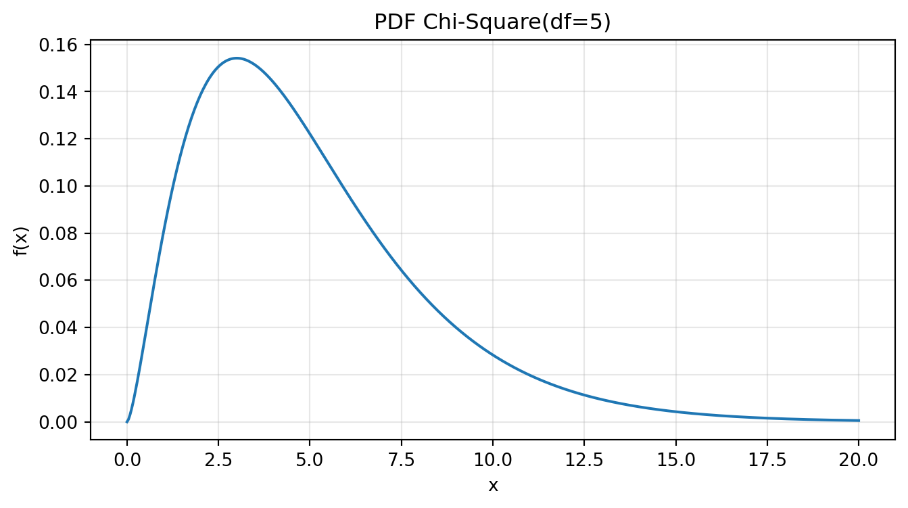
print("Mean =", df)
print("Variance =", 2*df)
print("P(X <= 7) =", stats.chi2.cdf(7, df=df))Mean = 5
Variance = 10
P(X <= 7) = 0.7793596920632894Bagian ini penting karena membantu mahasiswa melihat probabilitas sebagai jaringan ide, bukan daftar rumus terpisah.
Jika banyak kejadian dalam interval mengikuti Poisson process dengan rate \(\lambda\), maka waktu antar kedatangan mengikuti Exponential(\(\lambda\)).
Erlang adalah jumlah beberapa random variable Exponential independen dengan rate sama.
Erlang adalah kasus khusus Gamma dengan parameter shape berupa bilangan bulat positif.
Binomial dengan \(n\) besar sering dapat didekati oleh Normal.
Chi-Square adalah kasus khusus Gamma.
Mari buat diagram singkat dengan Mermaid.
flowchart LR
PoissonProcess["Poisson Process"] --> Exponential["Exponential (interarrival time)"]
Exponential --> Erlang["Erlang = jumlah k Exponential iid"]
Erlang --> Gamma["Gamma (generalisasi Erlang)"]
Binomial["Binomial (n besar)"] --> Normal["Normal approximation"]
Gamma --> ChiSquare["Chi-Square (kasus khusus Gamma)"]flowchart LR
PoissonProcess["Poisson Process"] --> Exponential["Exponential (interarrival time)"]
Exponential --> Erlang["Erlang = jumlah k Exponential iid"]
Erlang --> Gamma["Gamma (generalisasi Erlang)"]
Binomial["Binomial (n besar)"] --> Normal["Normal approximation"]
Gamma --> ChiSquare["Chi-Square (kasus khusus Gamma)"]
Umur hidup lampu memengaruhi kebijakan garansi. Jika garansi terlalu panjang, biaya klaim meningkat. Jika terlalu pendek, pelanggan kecewa.
Misalkan umur hidup \(X \sim \mathcal{N}(900,50^2)\).
mu, sigma = 900, 50
for T in [800, 850, 900]:
print(f"P(X < {T}) =", stats.norm.cdf(T, loc=mu, scale=sigma))P(X < 800) = 0.0227501319481792
P(X < 850) = 0.15865525393145707
P(X < 900) = 0.5CDF langsung memberi estimasi proporsi klaim garansi.
Sebuah klinik menerima pasien secara acak. Kita ingin memodelkan selang waktu antar kedatangan.
Jika kedatangan mengikuti Poisson process dengan rate \(\lambda\), maka interarrival time: \[ X \sim \mathrm{Exponential}(\lambda) \]
## rate 2 pasien/jam => 1 pasien setiap 30 menit rata-rata
lam_per_hour = 2
lam_per_minute = lam_per_hour / 60
print("Rata-rata waktu tunggu (menit) =", 1/lam_per_minute)
print("P(datang dalam 10 menit) =", stats.expon.cdf(10, scale=1/lam_per_minute))Rata-rata waktu tunggu (menit) = 30.0
P(datang dalam 10 menit) = 0.28346868942621073Sebuah layanan terdiri dari tiga tahap berurutan, masing-masing memoryless dan independen.
Masing-masing tahap \(X_i \sim \mathrm{Exponential}(\lambda)\), maka total: \[ T = X_1 + X_2 + X_3 \sim \text{Erlang}(3,\lambda) \]
rng = np.random.default_rng(42)
lam = 0.5
n = 100000
X1 = rng.exponential(scale=1/lam, size=n)
X2 = rng.exponential(scale=1/lam, size=n)
X3 = rng.exponential(scale=1/lam, size=n)
T = X1 + X2 + X3
x = np.linspace(0, np.percentile(T, 99.5), 400)
pdf = stats.gamma.pdf(x, a=3, scale=1/lam)
plt.figure(figsize=(8,4))
plt.hist(T, bins=60, density=True, alpha=0.6, label="Monte Carlo")
plt.plot(x, pdf, label="PDF Erlang-3")
plt.xlabel("Durasi total")
plt.ylabel("Density")
plt.title("Jumlah 3 Exponential iid menghasilkan Erlang-3")
plt.legend()
plt.grid(alpha=0.3)
plt.show()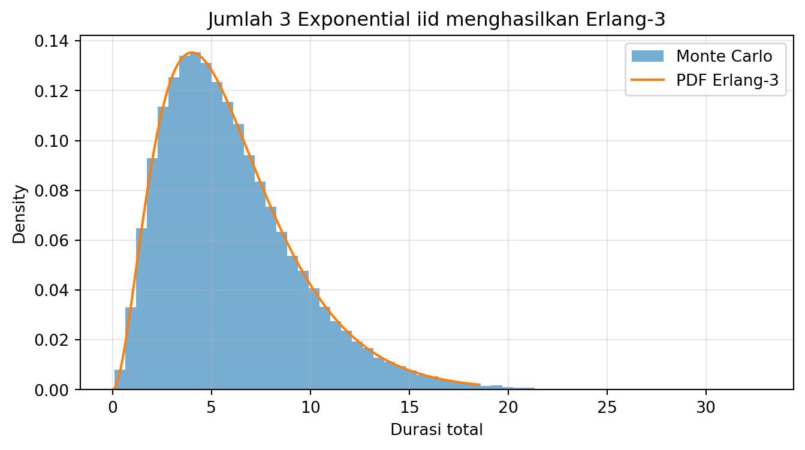
from scipy import stats
import numpy as np
import matplotlib.pyplot as pltstats.norm.pdf(0, loc=0, scale=1), stats.norm.cdf(1.96, loc=0, scale=1)(np.float64(0.3989422804014327), np.float64(0.9750021048517795))stats.expon.pdf(2, scale=3), stats.expon.cdf(2, scale=3)(np.float64(0.17113903967753066), np.float64(0.486582880967408))stats.gamma.pdf(4, a=3, scale=2), stats.gamma.cdf(4, a=3, scale=2)(np.float64(0.1353352832366127), np.float64(0.32332358381693654))stats.weibull_min.pdf(4, c=2, scale=10), stats.weibull_min.cdf(4, c=2, scale=10)(np.float64(0.06817150311729692), np.float64(0.14785621103378868))stats.pareto.pdf(2, b=3, scale=1), stats.pareto.cdf(2, b=3, scale=1)(np.float64(0.1875), np.float64(0.875))stats.chi2.pdf(5, df=4), stats.chi2.cdf(5, df=4)(np.float64(0.10260624827987348), np.float64(0.7127025048163542))Menganggap tinggi PDF adalah peluang
Tidak. Peluang adalah area di bawah kurva.
Menghitung \(P(X=x)\) untuk kontinu seolah-olah positif
Dalam model kontinu, peluang titik tunggal adalah nol.
Memakai Exponential untuk semua lifetime
Exponential hanya cocok bila hazard rate konstan / memoryless.
Memakai Normal untuk data yang sangat skewed atau bernilai negatif-padahal tidak mungkin
Pilih model sesuai konteks.
Menghafal distribusi tanpa memahami makna parameter
Yang penting bukan sekadar nama distribusinya, tetapi arti shape, scale, mean, variance, dan implikasinya.
Distribusi kontinu memberi kita bahasa untuk memodelkan banyak besaran dunia nyata yang berupa pengukuran, waktu, umur hidup, dan nilai-nilai positif yang berubah halus.
Kita telah melihat: - uniform kontinu untuk interval yang merata, - normal untuk fenomena simetris dan agregatif, - gamma untuk waktu tunggu positif yang fleksibel, - exponential untuk memoryless waiting time, - erlang untuk jumlah beberapa exponential, - weibull untuk reliability yang lebih fleksibel, - pareto untuk heavy-tail, - chi-square untuk inferensi statistik dan hubungan dengan normal.
Di samping itu, hubungan antardistribusi membantu kita melihat probabilitas sebagai sistem ide yang saling terhubung.
Kalau bab sebelumnya mengajarkan kita menghitung kejadian yang berupa hitungan, maka bab ini mengajarkan kita berpikir tentang besaran yang mengalir: waktu, umur hidup, pengukuran, dan intensitas.
Di bab berikutnya, kita akan memperluas pandangan lagi: dunia nyata jarang hanya punya satu peubah acak. Kita akan mulai melihat lebih dari satu random variable sekaligus, hubungan di antaranya, serta apa yang terjadi ketika satu random variable menjadi fungsi dari yang lain.